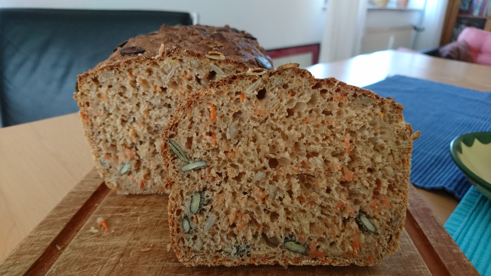

Saftiges Karotten-Vollkornbrot mit Sonnenblumenkernen
Mit anderthalb Stunden ein sehr schnelles Brot. Die Krume ist weich und saftig, die Kerne geben einen gewissen Biss. Es passt sowohl zu herzhaften als auch süßen Belägen. Ergibt ein Kastenbrot.

Zutaten (Menge ×1)
Gib die gewünschte Menge an:
Für den Teig
Karotten
Hefe
Zucker
Buttermilch
Weizenvollkornmehl
Dinkelvollkornmehl
Weizenmehl Type 550
Salz
Sonnenblumenkerne und/oder Kürbiskerne
Leinsamen
Zum Bestreuen
Sonnenblumenkerne und/oder Kürbiskerne
Utensilien
Dauerbackfolie für Kastenform
Kastenform
Ofeneinstellung
⏲ ohne Vorheizen 15 Minuten 220°C Ober-/Unterhitze → 20 Minuten 190°C → 15 Minuten ohne Kastenform 190°C
Lauwarme Buttermilch, Hefe und Zucker verrühren und 10 Minuten stehen lassen.
Währenddessen Karotten schälen und fein raspeln.
Alle restlichen Zutaten vermengen und mit den Karotten vermischen.
Buttermilch nach und nach dazugeben und den Teig verkneten.
Teig in die Kastenform mit Dauerbackfolie geben. Dabei darauf achten, dass kein Teig die Kastenform berührt.
30 Minuten ruhen lassen.
Brot mit Wasser benetzen und mit Sonneblumenkernen und/oder Kürbiskernen bestreuen.
15 Minuten ohne Vorheizen bei 220°C Ober-/Unterhitze backen.
Auf 190°C stellen und weitere 20 Minuten backen.
Brot aus der Kastenform entnehmen und weitere 15 Minuten bei 190°C zu Ende backen.